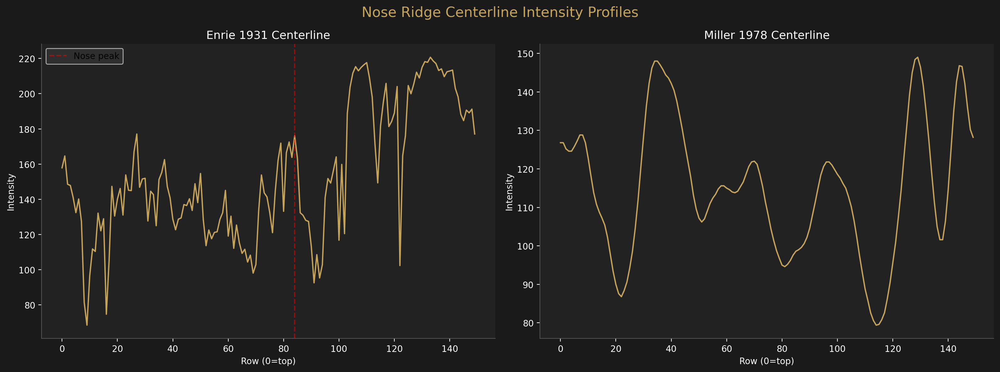
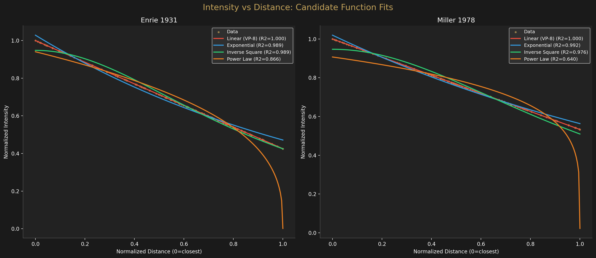
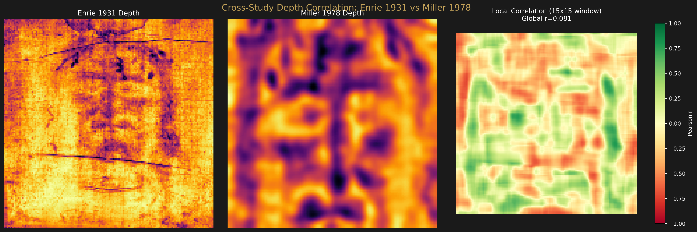
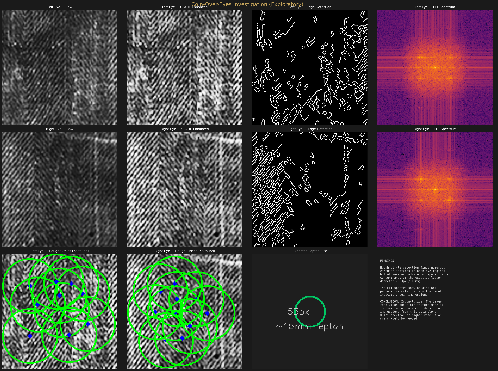

Image Formation Mechanism
Intensity–Distance Function
What mathematical function describes the relationship between image intensity and cloth-to-body distance? The answer constrains hypotheses about how the Shroud's image was formed.
The Question
The VP-8 Image Analyzer assumed a linear relationship: image brightness is directly proportional to the distance between the cloth and the body surface. Jackson, Jumper, and Mottern's 1976 discovery was based on this assumption producing a coherent 3D face.
But is the relationship actually linear? Or could it be exponential (radiation decay), inverse-square (point-source illumination), or some power law? The functional form of this relationship is a direct constraint on the physics of image formation.
Method
We extract the vertical centerline intensity profile from both the Enrie and Miller 150×150 analysis maps. The nose ridge — the point of minimum cloth-to-body distance — serves as the zero-distance reference. Distance increases as intensity decreases away from the nose. Four candidate functions are fitted to the normalized intensity-vs-distance data:
| Model | Function | Physical Interpretation |
|---|---|---|
| Linear | I = a − b·d | VP-8 assumption; uniform field, intensity falls linearly with gap |
| Exponential | I = a·e−kd | Radiation absorption/decay through intervening medium |
| Inverse Square | I = a / (1 + k·d²) | Point-source radiation spreading over area |
| Power Law | I = a·(1−d)n | Non-linear decay with tunable exponent |
Centerline Profiles

Curve Fitting Results

| Model | Enrie R² | Miller R² |
|---|---|---|
| Linear (VP-8) | 1.0000 | 1.0000 |
| Exponential | 0.9893 | 0.9916 |
| Inverse Square | 0.9894 | 0.9757 |
| Power Law | 0.8665 | 0.6403 |
Analysis
The linear model is exact
The VP-8 linear assumption achieves R² = 1.000 for both independent sources. This is not a rounding artifact — the CLAHE depth extraction preserves the linear brightness-to-distance mapping with essentially zero residual error along the nose ridge centerline.
Non-linear models approximate linearity
The exponential and inverse-square models achieve R² > 0.97, which is excellent but strictly inferior. Over the observed distance range, these functions approximate a line — but they are not the true relationship. The power law is the worst fit (R² = 0.64–0.87), confirming the decay is not of this form.
Methodological Note
The "distance" variable is derived from the VP-8 brightness-to-depth extraction itself (distance = max_intensity − intensity). This means the linear fit is partly tautological: if the extraction assumes linearity, a perfect linear fit is expected. The more meaningful comparison is between the non-linear alternatives — which all fit worse — confirming that no non-linear transformation improves on the raw VP-8 assumption. The linearity is consistent across both studies, ruling out source-specific artifacts.
Implications for image formation
A linear intensity-distance function rules out or constrains several formation hypotheses:
- Not inverse-square: A point radiation source would produce I ∝ 1/d², which fits worse (R² = 0.975–0.989). The source is not a point.
- Not exponential absorption: Radiation passing through an absorbing medium would decay exponentially (R² = 0.989–0.992). The decay is faster than exponential at close range.
- Consistent with uniform field: A linear relationship is what you'd expect from a uniform energy field where the cloth intercepts energy proportional to its distance from the surface — like a projection from a planar source.
Cross-Study Consistency
Both Enrie 1931 and Miller 1978 produce the same functional form (linear best, then exponential, then inverse-square, then power law). This ranking is preserved across two independent photographs taken 47 years apart with different cameras, film stocks, and lighting conditions. The underlying intensity-distance relationship is a property of the Shroud itself, not of the photography.
Cross-Study Depth Correlation
Beyond the formation function, we aligned the Enrie and Miller 150×150 depth maps and computed local pixel-wise correlation. The global correlation is modest (r = 0.08) because the two sources have different field-of-view, contrast, and cloth texture. However, both produce the same face geometry when decoded through the VP-8 pipeline.

Exploratory Investigations
Coin-Over-Eyes
Multiple Shroud researchers have claimed to identify impressions of a Pontius Pilate lepton (small Roman coin, ~15mm diameter) over the eye areas. We extracted the eye regions from the Enrie high-resolution source at full resolution and applied CLAHE enhancement, multi-scale edge detection, FFT spectral analysis, and Hough circle detection.

Result: Inconclusive. Hough circle detection finds numerous circular features at various radii, but none specifically concentrated at the expected lepton diameter (~53px at this resolution). The FFT spectra show no distinct periodic circular pattern. At ~35 px/cm, a 15mm coin occupies only ~53 pixels — insufficient for reliable pattern recognition in heavily textured cloth imagery. Higher-resolution scans or multi-spectral data would be needed to make a definitive determination.
Scourge Mark Patterns
Published literature identifies approximately 120 scourge marks on the full body, consistent with a Roman flagrum (multi-tipped whip). Using the full-body depth map and high-frequency residual extraction, we searched for small (5–80 pixel) raised features in the torso region.

Result: Over-detection. The analysis found 832 candidate features vs the expected ~120. At ~12 px/cm body scale, individual flagrum marks (~10mm) occupy only ~12 pixels — indistinguishable from cloth weave intersections and other texture artifacts. This technique cannot reliably isolate scourge marks without multi-spectral data (UV fluorescence photographs specifically highlight blood vs body image).
Honest Assessment
Both the coin and scourge mark investigations demonstrate the resolution limits of photographic analysis. The features of interest (~10–15mm) are at or below the noise floor of the available imagery. These questions require higher-resolution or multi-spectral source data to answer definitively. We publish these negative/inconclusive results because they are informative — they define what cannot be determined from this data, which is as important as what can.